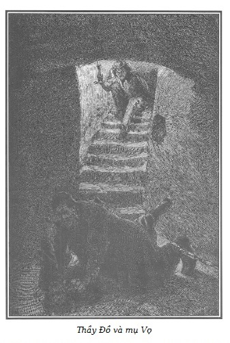

Ngồi ở bậc cầu thang trên cùng, thằng Tập Tễnh giơ cao ngọn nến cố soi sáng quang cảnh rùng rợn diễn ra dưới hầm sâu. Nhưng bóng tối khá dày đặc, thứ ánh sáng yếu ớt không đủ sức làm tiêu tan bóng tối.
Thằng con lão Cánh Tay Đỏ không phân biệt được gì.

.Cuộc vật lộn giữa mụ Vọ và lão Thầy Đồ âm thầm quyết liệt không một lời nói, không một tiếng kêu.
Tuy nhiên, từng lúc người ta nghe tiếng thở hổn hển mạnh mẽ, tiếng thở dốc phì phò của cuộc vật lộn quyết liệt.
Thằng Tập Tễnh ngồi trên bậc đá, giậm chân theo cái nhịp thường thấy của những khán giả tầng thượng ở các nhà hát.
– Này, kéo phông đi! Diễn đi! Nổi nhạc lên!
– Chà, tao túm cổ mày như tao muốn. – Lão Thầy Đồ thì thầm dưới đáy hầm. – Mày sẽ…
Một cử động vô vọng của mụ Vọ ngắt lời lão. Bản năng sợ chết làm mụ giãy giụa bằng hết sức mạnh của mình.
– To nữa lên, người ta không nghe thấy gì cả. – Tập Tễnh kêu lên.
– Mày đã cắn xé bàn tay tao, vô ích. Tao sẽ túm cổ mày như tao muốn. – Lão Thầy Đồ lặp lại.
Rồi khi đã nắm chắc được mụ Vọ trong tay, lão nói thêm:
– Như thế đấy! Bây giờ hãy nghe đây…
– Tập Tễnh, gọi bố mày! – Mụ Vọ hổn hển kiệt sức kêu lên. – Cứu tao với! Cứu tao với!
– Ra ngoài mà kêu, mụ già! Bên trong cửa không ai nghe được! – Thằng thọt phá lên cười. – Đả đảo kẻ âm mưu!
Tiếng kêu của mụ Vọ không thể lọt qua được hai tầng hầm.
Mụ già khốn nạn biết không còn trông mong gì ở thằng con lão Cánh Tay Đỏ, toan gắng sức lần cuối.
– Tập Tễnh, hãy cứu tao, tao cho mày cái túi chứa đầy đồ trang sức quý. Nó nằm ở đấy, dưới hòn đá.
– Rộng lượng quá nhỉ! Cảm ơn bà! Cái túi của bà, bà tưởng tôi không có hay sao? Này, bà có nghe cái gì xủng xẻng trong tay tôi không? – Thằng Tập Tễnh vừa nói vừa lắc cái túi. – Nhưng nếu lúc này bà có ngay cho tôi hai xu bánh nóng, tôi sẽ gọi bố tôi ngay lập tức!
– Hãy thương hại tao và tao… – Mụ Vọ không thể nói tiếp.
Lại một sự im lặng.
Thằng bé thọt trở lại đánh nhịp trên bậc đá, chỗ nó đang ngồi. Nó nói theo tiếng nhịp chân của mình.
– Còn chưa bắt đầu à? Ê, kéo phông màn lên, diễn đi, nổi nhạc lên!
– Bằng cách này, mụ sẽ không thể làm tao rối trí, vì tiếng kêu của mụ. – Lão Thầy Đồ nói sau vài phút. Trong thời gian đó chắc lão đã bịt được mồm mụ Vọ. – Mày hiểu rõ chứ, – lão nói chậm và ồ ồ – là tao chưa muốn kết liễu đời mày, đúng, rất dài, chuyện đó có thể là rất khủng khiếp đối với mày. Sự hấp hối đau khổ làm sao!
– A, này, lão già, đừng làm bậy. – Thằng Tập Tễnh vừa nói vừa nghển lên. – Lão hãy bỏ ngay ý định đó. Đừng làm quá đối với mụ. Lão nói là sẽ giết mụ. Chuyện ba láp phải không? Tôi đứng về phía mụ Vọ của tôi. Tôi cho lão mượn mụ ta, nhưng rồi lão sẽ phải trả mụ cho tôi, đừng làm sây sát mụ. Nếu không tôi sẽ đi gọi bố tôi.
– Hãy yên tâm! Mụ ta sẽ nhận được những gì xứng đáng, một bài học bổ ích. – Lão Thầy Đồ trấn an thằng thọt, sợ nó đi kêu cứu.
– Đúng, tốt lắm! Hoan hô! Màn kịch đã bắt đầu. – Thằng con trai lão Cánh Tay Đỏ không biết rằng tính mạng mụ Vọ đang bị đe dọa nghiêm trọng.
– Chúng ta hãy nói chuyện với nhau, mụ Vọ. – Lão Thầy Đồ nói giọng bình tĩnh. – Trước hết, mày thấy không, kể từ cái giấc mơ ở trang trại Bouqueval hiện lên trước mắt tao tất cả mọi tội ác của chúng ta. Cái giấc mơ đó thiếu chút nữa làm cho tao phát điên vì trong sự cô đơn, trong sự cô lập tuyệt đối mà tao đang sống, một tư tưởng bất giác đến với tao sau giấc mơ đó. Nó đã làm biến đổi trong tao một cách kỳ lạ. Đúng, tao đã thấy khiếp sợ trước sự hung ác của mình xưa kia. Trước hết, tao không cho phép mày đày đọa con bé Sơn Ca. Chuyện đó còn chưa đến đâu! Xích tao lại trong cái hầm này, làm cho tao đau khổ vì đói và rét, nhưng lại giúp tao không bị mày ám ảnh. Mày đã bỏ mặc tao với tất cả những suy tưởng hãi hùng của tao! Ôi, mày không hiểu được thế nào là cô đơn, vĩnh viễn cô đơn, luôn là một màn đen trước mắt. Cái đó thật hãi hùng! Chính trong cái hầm này tao đã ném người ta để giết và chính cái hầm này lại là nơi tao chịu khổ hình. Có thể sẽ là nấm mồ của tao. Tao nhắc lại với mày, chuyện đó thật khủng khiếp. Những gì con người ấy dự kiến đều đã thành sự thật. Ông ta đã nói với tao: “Mày đã lạm dụng sức khỏe của mày. Mày sẽ trở thành trò chơi cho những kẻ yếu nhất.” Chuyện đó diễn ra. Ông ta đã nói với tao: “Kể từ nay, tách rời khỏi thế giới bên ngoài, đối mặt với những tội ác của mày, một ngày nào đó, mày sẽ phải hối hận.” Và ngày đó đã đến. Sự cô đơn tẩy uế tao. Tao không tin là chuyện đó có thể xảy ra. Một chứng cứ khác, có thể tao đã bớt hung ác hơn xưa. Chính là tao cảm thấy một niềm vui vô tận được tóm cổ mày như thế này. Đồ quỷ sứ, không phải là để trả thù cho tao, mà để trả thù cho các nạn nhân của chúng ta. Đúng, tao sẽ hoàn thành một nghĩa vụ khi chính tay tao sẽ trừng phạt đồng phạm của tao. Dường như có ai nói, nếu mày rơi vào tay tao sớm hơn, biết bao nhiêu máu sẽ không phải đổ dưới bàn tay mày. Lúc này tao thấy ghê tởm những chuyện giết người của tao trước đây, thế mà mày lại không thấy chuyện đó là kỳ khôi hay sao? Nói đi, nói đi, mày có nhận thức được điều đó không?
– Hoan hô, chơi khá đấy, lão già không mắt. Căng đấy! – Thằng Tập Tễnh vừa vỗ tay vừa nói. – Tất cả là trò đùa đấy chứ?
– Bao giờ cũng để gây cười, – lão Thầy Đồ nhắc lại, giọng ầm ầm. – Này, hãy nhớ lấy, mụ Vọ. Rốt cuộc tao sẽ phải giải thích cho mày vì sao tao lại dần dần hối hận. Sự phát hiện đó sẽ khả ố đối với mày, một trái tim chai sạn, nó cũng sẽ chứng tỏ tao muốn thực hiện điều này đối với mày, nhân danh những nạn nhân của chúng ta. Niềm vui được tóm cổ mày làm tao sôi máu, hai thái dương tao đập mạnh. Càng nghĩ nhiều đến giấc mơ, lý trí của tao càng rối loạn, có thể một trong những cơn khủng hoảng đó đã tới… Nhưng tao sẽ đủ thời giờ đưa mày đến gần cái chết khủng khiếp và buộc mày phải nghe tao!
– Hãy dũng cảm lên, mụ Vọ. – Thằng Tập Tễnh kêu lên. – Hãy dũng cảm lên! Bà không biết rõ vai bà đóng. Vậy thì nói với quỷ sứ nhắc giúp. Bà lão kia!
– Ôi, mày sẽ giãy giụa vô ích! – Lão Thầy Đồ nói sau một phút im lặng. – Mày không thoát khỏi tay tao đâu. Mày đã cắn đứt ngón tay tao nhưng tao sẽ cắt lưỡi mày nếu mày cựa quậy. Tiếp tục nói chuyện nhé! Trong lúc cô đơn, vĩnh viễn cô đơn trong đêm đen và trong im lặng, tao bắt đầu cảm thấy những cơn điên khủng khiếp, bất lực, lần đầu tiên tao mất trí. Đúng, mặc dù đã thức giấc, tao vẫn thấy lại giấc mơ, mày biết không, giấc mơ… Lão già bé nhỏ phố Temple, người đàn bà bị dìm chết, lão lái buôn gia súc, và mày bay lượn trên những bóng ma đó. Tao nói với mày, chuyện đó thật khủng khiếp! Tao mù nhưng ý chí của tao thành một thể giúp tao hình dung thật rõ, gần như hiển nhiên nét mặt những nạn nhân. Không mơ giấc mơ khủng khiếp đó, đầu óc tao lại vẫn luôn bị ám ảnh về những tội ác đã qua làm tao rối loạn. Không nghi ngờ gì nữa, khi bị mù, những ý tưởng ám ảnh hiện lên rất rõ nét trong đầu óc. Tuy nhiên, đôi lúc ngắm nghía nó với sự sợ hãi nhẫn nhục, tao cảm thấy, hình như những ma quỷ đáng sợ đó thương hại tao, chúng tỏa ra, mờ đi và biến mất. Lúc đó tao tin là tao tỉnh dậy sau một giấc mơ bi thảm. Tao cảm thấy yếu đuối rã rời, kiệt quệ. Mày có tin không? Ôi, hình như mày cười… Tao khóc, mày nghe chứ, tao khóc… Mày không cười à, cười đi, cười đi…
Mụ Vọ phát ra một tiếng rên nặng nhọc, ngạt thở.
Thằng Tập Tễnh la to:
– Nói to hơn đi, không ai nghe thấy gì cả!
– Tao khóc vì tao đau khổ. – Lão Thầy Đồ nói tiếp. – Tức giận cũng vô ích. Tao tự nhủ ngày mai, ngày kia, tao luôn làm mồi cho những cơn hôn mê và sự đau khổ. Cuộc sống đau khổ làm sao! Cuộc sống đau khổ làm sao! Tao thà chọn cái chết hơn là bị liệm sống trong màn đêm này. Mù lòa, cô đơn và giam cầm. Ai có thể làm tao quên được sự hối hận? Không ai có thể, không ai có thể. Khi những bóng ma, trong chốc lát không diễu qua diễu lại trước màn đen của mắt tao, thì lại là những giày vò khác. Đấy là những điều so sánh chết người. Tao tự nhủ, nếu tao là người lương thiện thì giờ này tao đang được tự do, yên tĩnh, sung sướng, được người xung quanh yêu mến, kính nể, chứ không bị mù lòa và bị xích trong cái hầm này, phó mặc cho đồng bọn của tao. Than ôi, sự luyến tiếc hạnh phúc bị mất đi vì tội ác là bước đầu đi đến sự hối hận. Và sự hối hận gắn với sự chuộc tội nghiêm khắc ghê gớm. Một sự chuộc tội làm thay đổi đời tao thành một đêm dài mất ngủ, chứa đầy những ảo tưởng trả thù, và những suy nghĩ tuyệt vọng. Có thể lúc đó, sự tha thứ của con người sẽ tiếp sau sự hối hận và chuộc tội.
Thằng Tập Tễnh la to:
– Coi chừng lão khọm, lẫn vai rồi đấy! Biết rồi, biết rồi!
– Chuyện tao nói làm mụ ngạc nhiên phải không, mụ Vọ? Nếu tao tiếp tục say sưa với những trọng tội đẫm máu, với nhà tù khổ sai, thì không bao giờ những đổi thay tốt lành đó lại diễn ra trong tao. Tao hiểu điều đó. Nhưng cô đơn, mù lòa, hối hận, giày vò, thì nghĩ đến những gì đây? Đến những tội ác mới? Thực hiện như thế nào? Đào tẩu ra sao? Và nếu đào tẩu được, tao sẽ đi đâu? Tao sẽ làm gì với sự tự do của mình? Không! Tao phải sống trong đêm tối vĩnh viễn, giữa những thống khổ của sự hối hận, và sự hãi hùng của những hiện hình khủng khiếp. Đôi lúc, một tia hy vọng yếu ớt lóe lên trong màn đêm của tao, một thời gian yên tĩnh tiếp sau những sự giày vò của tao. Đúng, bởi vì đôi lúc tao đã van xin được những bóng ma ám ảnh, đối phó bằng những kỷ niệm về một thời quá khứ lương thiện, yên lành, đi ngược lại ký ức về buổi đầu thời trai trẻ, thời thơ ấu của tao. May thay, mày thấy không, những tên đại gian ác cũng có những cái đáng yêu của thời thơ ấu, cũng biết được những niềm vui êm đềm của lứa tuổi đáng yêu đó. Vì thế tao nhắc lại với mày, nhiều lúc tao cảm thấy một niềm an ủi cay đắng. Lúc này tao đã bị xã hội thù ghét, nhưng có một thời tao được mọi người yêu mến, bảo vệ vì tao tốt và không làm hại ai. Than ôi, tao cần phải trốn vào quá khứ khi tao có điều kiện, chỉ ở đó, tao mới cảm thấy đôi chút yên tĩnh.
Trong lúc nói những lời cuối đó, lão Thầy Đồ đã mất đi sự gay gắt. Con người bất trị đó hình như cảm động một cách sâu sắc. Lão nói thêm:
– Mày biết không! Những tư tưởng tốt đẹp đã làm sự giận dữ của tao dịu đi, tao không còn sự can đảm, sức mạnh, nghị lực để trừng trị mày. Không, không phải là tao sẽ giết mày…
– Hoan hô, lão già! Thấy không bà Vọ? Đúng là một trò đùa! – Thằng thọt vừa cười vừa vỗ tay.
– Không, không phải là tao phải giết mày. Như thế lại là một vụ giết người, tao đã có đủ ba tội ác, và rồi ai biết, có thể một ngày kia mày sẽ phải hối hận. Mày ấy!
Trong khi nói, lão Thầy Đồ đã vô tình cho mụ Vọ được lỏng tay một chút.
Lợi dụng thời cơ đó, mụ rút con dao, giấu trong quần lót sau khi đâm Sarah, đâm lão Thầy Đồ một nhát thật mạnh để tự giải thoát.
Lão Thầy Đồ thét lên đau đớn.
Bản năng khát máu đột nhiên thức tỉnh. Lòng thù hận, sự trả thù, sự điên dại vì nhát dao đâm đã bùng nổ ghê gớm, phá hoại lý trí đã bị chấn động mạnh mẽ ở lão.
– A, đồ rắn độc. Tao đã được nếm răng mày. – Lão thét lên run rẩy vì giận dữ và ghì chặt mụ Vọ tưởng như đã thoát được tay lão. – Mày trườn trong hầm này hả? – Lão nói tiếp, mỗi lúc một giận dữ hơn. – Nhưng tao sẽ nghiền nát mày, đồ rắn độc, cú vọ. Chắc mày chờ bọn quỷ đến. Đúng, bởi vì máu đang đập trong thái dương tao, tai tao ù ù lên đây này, đầu tao quay cuồng, giống như lũ ma đang đến. Đúng, tao không tự dối mình. Ôi, chúng đấy, từ đáy sâu bóng tối, chúng đến, sao chúng xanh xao thế, và sao máu của chúng chảy nhiều thế… Đỏ và nóng hổi… Cái đó làm mày khiếp sợ, mày giãy giụa… Này, hãy bình tĩnh, mày sẽ không thấy chúng đâu. Tao thương hại mày. Tao sẽ làm cho mày mù. Mày sẽ như tao, không có mắt.
Đến đây, lão Thầy Đồ ngừng một lát.
Mụ Vọ kêu lên một tiếng kinh hoàng đến nỗi thằng thọt bật lên trên bục đá và đứng dậy.
Tiếng kêu khiếp đảm ấy gần như đẩy sự giận dữ hoảng loạn của lão Thầy Đồ lên tột độ.
– Hát đi, – lão nói giọng trầm trầm. – Hát đi, mụ Vọ. Hát bài hát tử thần. Mày thật sung sướng. Mày không thấy bóng ma của ba kẻ đã bị chúng ta giết. Lão già bé nhỏ ở phố Roule, người đàn bà bị dìm chết, người lái buôn gia súc… Tao… tao thấy bọn chúng… chúng đang lại gần, chúng sờ vào tao… Ôi, sao lạnh thế này! Ôi!
Ánh sáng trí tuệ cuối cùng của kẻ khốn nạn đó tắt hẳn trong tiếng kêu rùng rợn, đày đọa đó.
Từ đó, lão Thầy Đồ không nói gì nữa, lão hành động như một con thú. Lão chỉ còn nghe lý trí hung bạo để phá hoại.
Và, có một điều gì đó thật hãi hùng diễn ra trong bóng tối căn hầm.
Người ta nghe thấy tiếng bước chân hối hả, ngắt quãng từng đoạn bởi tiếng động âm thầm, vang lên như tiếng của một chiếc hộp bằng xương mà người ta muốn đập vỡ nó trên một tảng đá.
Một tiếng rên rỉ, quằn quại và tiếng cười ghê rợn phát ra kèm theo cú đánh.
Tiếp theo là một tiếng thở hắt ra, hấp hối.
Rồi người ta không còn nghe thấy gì nữa!
Chỉ còn nghe thấy những tiếng chân bước từ xa và tiếng nói vẳng xuống tận đáy hầm.
Một cảnh tượng diễn ra trong bóng tối làm thằng Tập Tễnh sợ lạnh gáy. Nhiều ánh đuốc lóe sáng ở đầu cầu thang.
Trong khoảnh khắc, căn hầm bị nhiều nhân viên cảnh sát, dẫn đầu là Narcisse Borel, và những người tự vệ thành phố chặn ngang lối ra vào.
Thằng Tập Tễnh bị tóm cổ ngay trên bậc thang thứ nhất, vẫn cầm trong tay chiếc túi của mụ Vọ.
Narcisse Borel cùng vài người tùy tùng đi xuống hầm, nơi lão Thầy Đồ bị nhốt.
Mọi người dừng bước trước cảnh tượng ghê rợn: Lão Thầy Đồ bị xích vào tảng đá to giữa hầm, râu dài, tóc dựng lởm chởm, miệng đầy bọt, mặc một bộ quần áo rách tươm đầy máu, ghê tởm, quái gở, quay cuồng như một con thú quanh ngục tối. Kéo lê theo sau lão là hai chân của mụ Vọ, đầu bị giẫm bẹp, vỡ nát.
Phải vật lộn giằng co dữ dội mới lôi được cái xác đẫm máu của mụ đồng phạm và trói được lão Thầy Đồ.
Sau một cuộc chống cự mạnh mẽ, người ta mới đưa được lão đến căn phòng thấp trong quán rượu của Cánh Tay Đỏ, một gian phòng rộng, tối, chỉ có ánh sáng từ một khung cửa duy nhất.
Ở đó đang giam bọn Cá Trê, Nicolas Martial. Bọn chúng đều bị còng tay. Chúng bị bắt ngay lúc vừa lôi bà môi giới kim cương vào để cứa cổ họng.
Bà này được đưa sang một phòng khác để lấy lại hồn vía.
Nằm dưới đất, bị hai cảnh sát giữ khá vất vả, lão Thầy Đồ bị thương nhẹ ở tay do bị mụ Vọ đâm, rên rỉ, gầm gừ như một con bò rừng bị đâm trong trạng thái hoàn toàn mất trí.
Đôi lúc lão đột nhiên vùng lên, co giật dữ dội.
Cá Trê mặt cúi gằm, nước da xanh xám, màu chì. Đôi môi nhợt nhạt, mắt trừng trừng dữ tợn. Bộ tóc dài màu xanh đen trùm lên trên cổ áo bị rách trong khi vật lộn. Gã ngồi trên chiếc ghế dài, cổ tay bị còng siết chặt, đặt trên đầu gối.
Vẻ ngoài non choẹt của thằng khốn nạn (gã chưa đầy hai mươi tuổi) cùng bộ mặt vốn có đường nét đầy đặn, nhẵn nhụi của gã tàn úa, bệ rạc do những dấu vết ghê tởm của trụy lạc và tội ác trông càng thảm hại.
Gã ngồi ì, thản nhiên, không nói một lời.
Người ta không biết vẻ vô cảm đó là do một nghị lực lạnh lùng hay do kinh ngạc. Gã thở nhanh và thỉnh thoảng lấy hai bàn tay bị còng lau mồ hôi ướt đầm trên vầng trán xanh xao. Bên cạnh gã, người ta thấy Quả Bầu, đã bị lột mũ, bộ tóc vàng nhạt buộc sau gáy bằng một sợi dây, trải ra sau đầu thành nhiều mảnh thưa thớt. Tức giận hơn là thất vọng, đôi má gầy xám hơi tía lên, nhìn khinh bỉ thằng anh Nicolas vẻ thất vọng đang ngồi trên một chiếc ghế tựa trước mặt.
Đoán trước số phận đang chờ đợi mình, tên cướp đó chán nản cúi gằm, đầu gối run va vào nhau, sợ mất mật, hai hàm răng gõ vào nhau liên tục, thốt ra những tiếng rên âm ỉ.
Mụ Martial, mụ già tội lỗi đứng dựa vào tường, riêng mụ ta không tỏ ra chút lo sợ nào!
Đầu ngẩng cao, mụ ném ánh nhìn ngang tàng ra xung quanh, vẻ mặt sắt đá không chút rung động. Thế nhưng, khi trông thấy Cánh Tay Đỏ bị dẫn vào trong phòng, sau khi đã cho hắn chứng kiến sự lục soát kĩ lưỡng mà ông ủy viên và viên lục sự tiến hành trong căn nhà, thì nét mặt mụ góa co rúm lại, mặc dù mụ không muốn. Đôi mắt ti hí của mụ, bình thường âm thầm, bỗng sáng lên như đôi mắt con rắn độc đang nổi giận, đôi môi mụ mím lại trở nên nhợt nhạt, mụ nắm chặt hai bàn tay bị xiềng, tự trấn tĩnh mình và trở nên câm lặng đáng sợ.
Trong lúc ông ủy viên và viên lục sự hỏi cung, Narcisse Borel xoa hai bàn tay, ném cái nhìn thương hại cho đám tội nhân nguy hiểm mà ông vừa tóm được, giải phóng Paris khỏi một băng cướp nguy hiểm.
Nhưng công nhận là Cánh Tay Đỏ đã giúp ông trong việc bắt bớ này, ông không khỏi nhìn lão một cách có ý nghĩa và biết ơn.
Bố thằng Tập Tễnh cũng chung số phận với những kẻ mà hắn tố giác, cho đến ngày phán xử. Cũng như bọn chúng, lão cũng bị còng tay. Hơn cả chúng, lão còn ra vẻ run sợ, kinh ngạc nhăn nhúm đến hết mức bộ mặt chồn cáo để tự tạo cho mình một vẻ thất vọng và bật ra những tiếng thở dài não nuột.
Lão ôm thằng Tập Tễnh như muốn tìm một niềm an ủi trong những cái hôn đầy tình phụ tử.
Thằng thọt tỏ ra ít cảm động trước biểu hiện âu yếm. Nó vừa được biết là nó được đưa vào trại cải tạo những đứa trẻ hư cho đến khi có lệnh mới.
– Đau khổ làm sao khi ta phải xa đứa con thân yêu của ta! – Cánh Tay Đỏ cảm kích nói với mụ Martial.
Mụ ta không thể giữ được bình tĩnh vì mụ đã cảm nhận rõ sự phản phúc của Cánh Tay Đỏ, mụ thét lên:
– Tao tin chắc là mày đã bán rẻ con tao! Này, tên Judas. – Và mụ nhổ vào mặt lão Cánh Tay Đỏ. – Mày bán đứng chúng tao, biết không. Người ta sẽ chứng kiến cái chết dũng cảm của nhà Martial.
– Đúng, chúng ta không tỏ ra hèn yếu trước tên phản bội. – Quả Bầu thêm vào với một sự hưởng ứng thô bạo.
Mụ góa nhìn Nicolas với ánh mắt khinh bỉ, nói tiếp:
– Những đồ hèn nhát đó sẽ làm nhục chúng ta trên đoạn đầu đài.
Một lát sau, hai viên cảnh sát đưa mụ góa và Quả Bầu lên một chiếc xe ngựa đến ngục Saint-Lazare.
Cá Trê, Nicolas và Cánh Tay Đỏ bị đưa vào trại giam La Force. Người ta đưa lão Thầy Đồ đến trại Conciergerie, ở đó có phòng giam dùng để nhốt tạm các tội phạm bị mất trí.